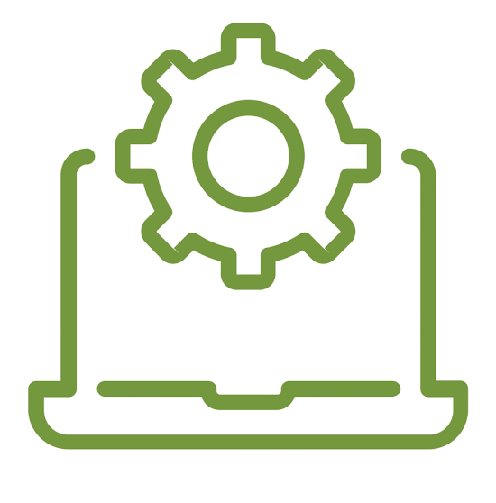

Front-end web development is the practice of converting data to a graphical interface, through the use of HTML, CSS, and JavaScript, so that users can view and interact with that data.
 FrontEnd Developer
FrontEnd Developer- BackEnd Developer
 Android Developer
Android Developer - Devops
Back end Development refers to the server side of development where you are primarily focused on how the site works.
Android software development is the process by which applications are created for devices running the Android operating system.
DevOps is a set of practices that combines software development (Dev) and IT operations (Ops).
It aims to shorten the
systems development life cycle and provide continuous delivery with high software quality.